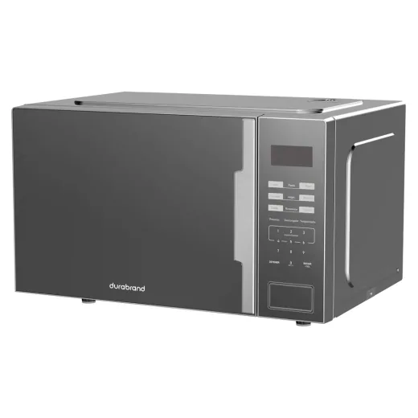
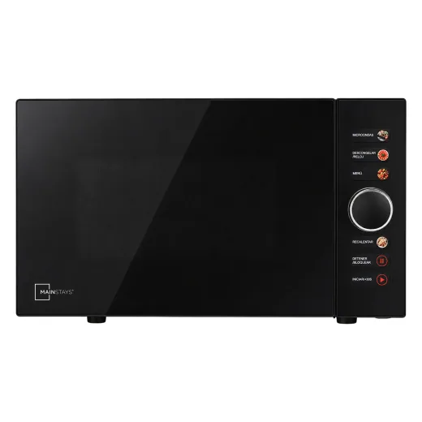
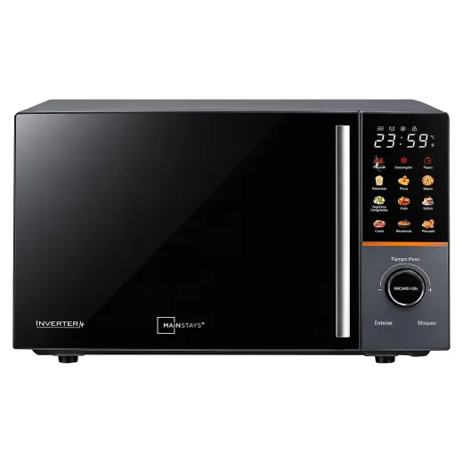
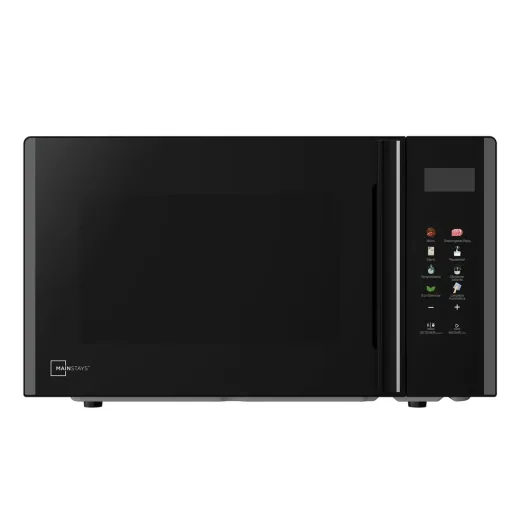
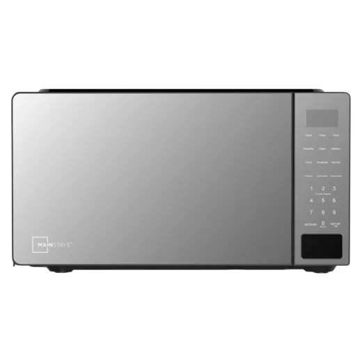

Mainstays
Microondas Mainstays Digital Capacidad 25 L de 0.9 Pies Cúbicos
L 2,495
En Walmart
Precio en cada tienda
| Tienda | Precio | Antes | Disponibilidad | |
|---|---|---|---|---|
| Walmart | L 2,495 | — | Disponible | Ver en tienda › |
Precios referenciales tomados de cada tienda el 28 de noviembre de 2026. El precio válido es el que muestra la tienda al comprar.
Historial de precio
Lo seguimos desde el 18 de noviembre. Precio más bajo registrado: L 2,495 en Walmart (18 de noviembre), igual que hoy. El precio no ha cambiado en ese tiempo.
Características
| Color | Negro |
|---|---|
| Marca | Durabrand |
| País de Origen - Ensamblaje | China |
| Acabado | Liso |
| Material | Acero inoxidable |
| Uso recomendado | Calentar alimentos |
| Requiere ensamblaje | No |
| Voltaje | 120V |
| Watts de potencia | 900W |
| Cantidad de puertas | 1 |
| Tipo de control de temperatura | Manual |
| Posee luz interior | Sí |
Descripción
El microondas digital Mainstays 25L modelo 09CF combina capacidad, funcionalidad y diseño moderno para facilitar tus tareas en la cocina. Con un amplio espacio interno de 25 litros, es ideal para calentar, descongelar y preparar distintos alimentos de manera rápida y uniforme. Su panel digital ofrece controles fáciles de usar, permitiéndote seleccionar tiempos y potencias con precisión. Además, cuenta con funciones prácticas que aseguran un mejor desempeño y un uso cómodo en tu día a día. Su diseño elegante y compacto se adapta perfectamente a cualquier cocina, aportando estilo y practicidad al mismo tiempo.
Información del producto: La información de este producto es proporcionada por fabricantes y distribuidores. Te recomendamos verificar las especificaciones con el fabricante para obtener detalles más actualizados.
Otros microondas Mainstays

Microondas Mainstays Digital 25 L 0.9 CFL 2,595En Walmart
Microondas Mainstays Panel de 1.1 Pies CúbicosL 2,295En Walmart
Microondas Mainstays Digital de 30 L (1.1 CF)L 2,995En Walmart
Microondas Mainstays Digital capacidad de 20 L de 0.7 pies cúbicosL 1,695En Walmart Microondas Mainstays de 0.7 pies cúbicosL 1,295En Walmart
Microondas Mainstays de 0.7 pies cúbicosL 1,295En Walmart